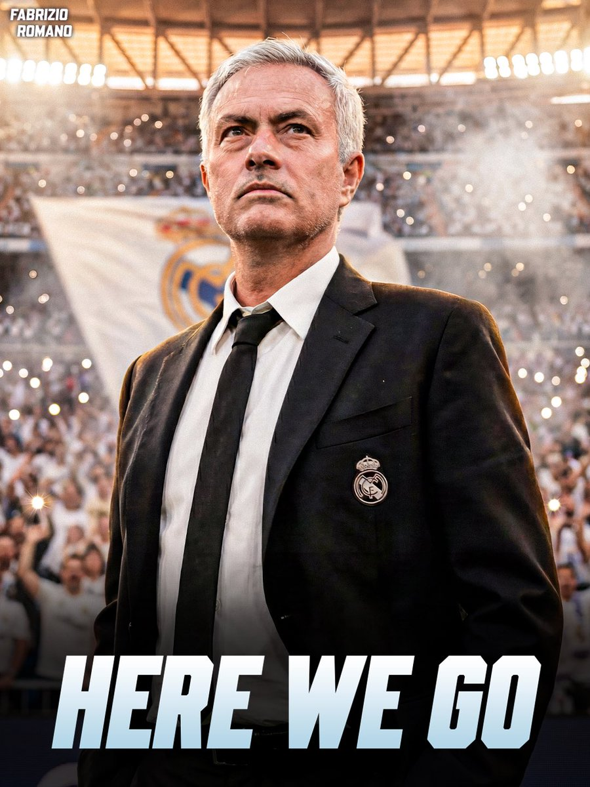

Next season, the coach who generates the most hype combined with the club that generates the most hype — I feel like football content creators and bloggers are going to have an absolute field day. Next season’s Real Madrid will generate so much more traffic and attention that even Manchester United will look like a little brother in comparison.
Mourinho is undoubtedly a great fit for the current Real Madrid. It just depends on how much financial backing and support the board is willing to give him to implement his style of play. Real Madrid’s current center-back setup feels quite different from what Mou likes.
That said, on the flip side — if the Real Madrid management had actually supported the coach from the beginning and signed players according to the coach’s vision, then Ancelotti probably wouldn’t have had to leave back then, and the club wouldn’t have ended up in such a mess afterward.
当然 我已经知道明年曼城欧冠百分百会遇到谁了

Mourinho is undoubtedly a great fit for the current Real Madrid. It just depends on how much financial backing and support the board is willing to give him to implement his style of play. Real Madrid’s current center-back setup feels quite different from what Mou likes.
That said, on the flip side — if the Real Madrid management had actually supported the coach from the beginning and signed players according to the coach’s vision, then Ancelotti probably wouldn’t have had to leave back then, and the club wouldn’t have ended up in such a mess afterward.
当然 我已经知道明年曼城欧冠百分百会遇到谁了

🚨 BREAKING: José Mourinho back to Real Madrid, HERE WE GO! 💣🤍
All terms have been verbally agreed between José Mourinho and Real Madrid, waiting to sign all documents.
Plan for initial two year deal, JM to travel to Madrid after Real-Bilbao game.
The Special One is back. https://t.co/K267WgiqjC
All terms have been verbally agreed between José Mourinho and Real Madrid, waiting to sign all documents.
Plan for initial two year deal, JM to travel to Madrid after Real-Bilbao game.
The Special One is back. https://t.co/K267WgiqjC